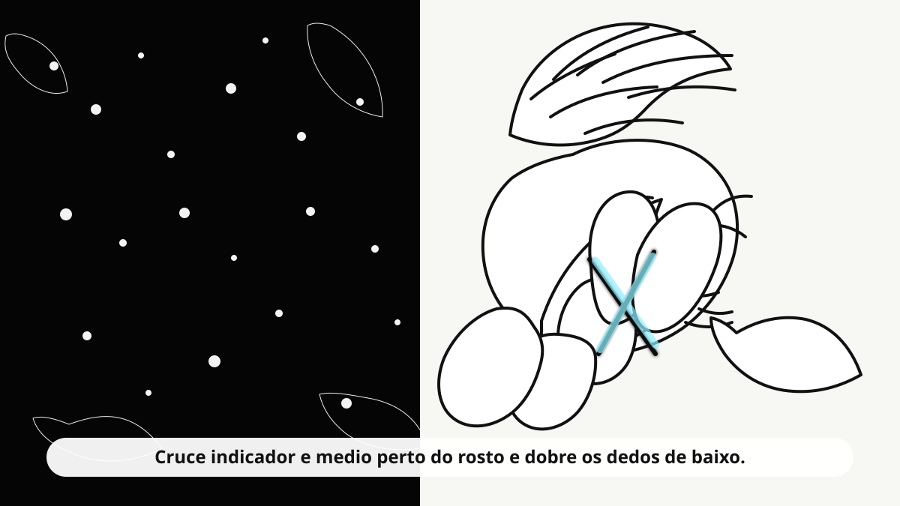

Camera + mao + dominio
Faça o selo com indicador e medio cruzados. Esta versao foca no rastreio da mao: menos peso visual, menos processamento paralelo e ativacao so pelo gesto.
Camera e PWA funcionam melhor em contexto seguro: `localhost` ou HTTPS.
